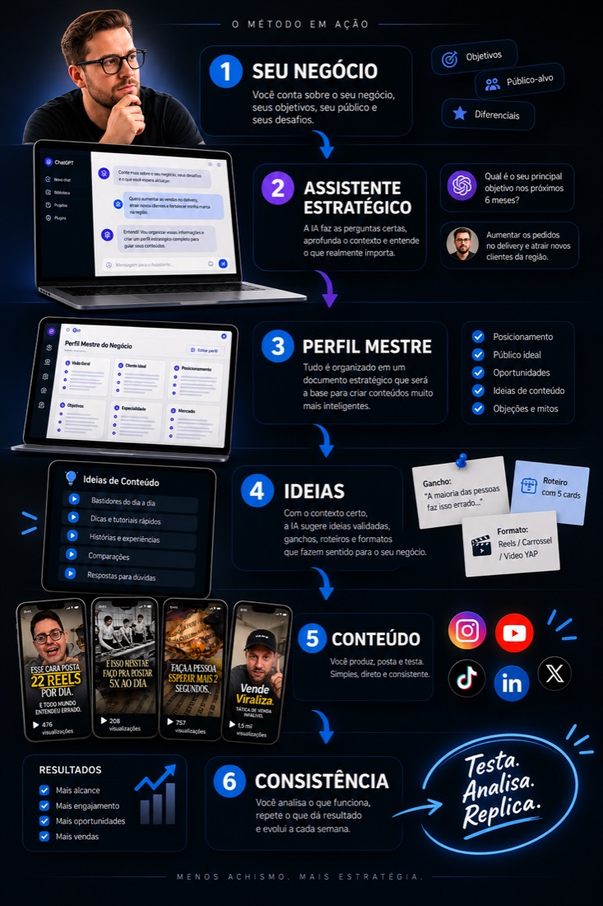
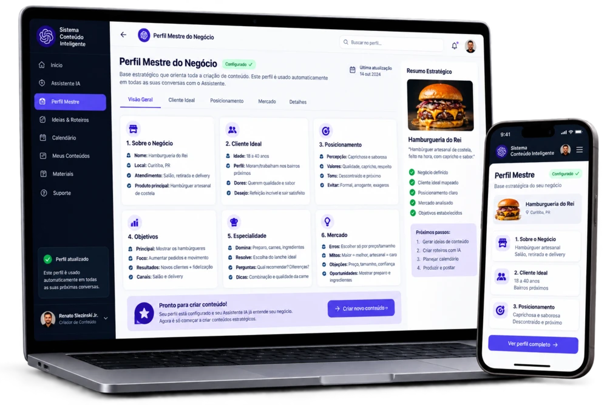

Durante os próximos dias, vou apresentar o Sistema Conteúdo Inteligente, explicar como funciona o método e mostrar por que ele é diferente de simplesmente pedir ideias ao ChatGPT.
No final, vou abrir uma condição especial de lançamento exclusivamente para quem estiver no grupo.
Você sabe que precisa criar conteúdo. O problema é conseguir manter.
Eu comecei a testar formas mais simples de transformar ideias, conhecimento e situações do dia a dia em conteúdo.
Você sabe que estar presente nas redes sociais é importante para o seu negócio. Seus clientes estão ali. Seus concorrentes estão ali. E todos os dias existe uma oportunidade de mostrar o que você faz, responder uma dúvida, ensinar alguma coisa ou simplesmente ser lembrado. Mas, na prática, criar conteúdo acaba ficando sempre para depois.
Abre o Instagram, olha para a tela e não consegue pensar em uma ideia que realmente faça sentido para o seu negócio.
Uma ideia que deveria ser simples acaba virando uma tarde inteira pensando em roteiro, legenda, formato e edição.
Publica alguns dias, perde o ritmo, fica sem ideias e depois precisa começar tudo novamente.
Você conhece seu mercado e resolve problemas todos os dias. Só que transformar esse conhecimento em conteúdos interessantes não parece tão simples.
Você pede ideias para o ChatGPT e recebe respostas que poderiam servir para qualquer empresa.
E talvez você tenha começado a acreditar que o problema é falta de criatividade.
Mas e se não for? E se o problema for simplesmente não ter um processo para transformar o que você já sabe em conteúdo?
Você não precisa se tornar uma máquina de ideias. Não precisa passar horas todos os dias pensando no que postar. E não precisa criar tudo do zero. Você precisa de um processo que transforme o conhecimento que já existe dentro do seu negócio em conteúdo.
Menos tempo pensando no que postar.
Mais tempo fazendo o que importa no seu negócio.
Eu sempre tive vontade de empreender. No Brasil, já tive um e-commerce e sempre gostei da ideia de construir alguma coisa minha.
Quando vim para a Irlanda, muita coisa mudou.
Um novo país.
Uma nova língua.
Uma nova rotina.
Estudos.
Trabalho. E a necessidade de começar muita coisa praticamente do zero.
Mas o sonho de empreender continuava.
Foi aqui que comecei a criar conteúdo no YouTube e no Instagram junto com a minha esposa. O projeto começou a crescer e eu percebi que o conteúdo poderia ser uma das formas de voltar a construir um negócio próprio.
Só que existia um problema. Eu não tinha tempo sobrando. Eu estava trabalhando, estudando, aprendendo uma nova língua e tentando construir uma vida em outro país. E ainda precisava criar conteúdo.
Foi aí que comecei a perceber uma coisa: não é difícil ter uma ideia. O difícil é continuar tendo ideias, transformar essas ideias em conteúdo e fazer isso sem passar horas todos os dias pensando no que postar.
Comecei a testar maneiras mais simples de produzir. Passei a olhar para as coisas que já aconteciam no meu dia, para aquilo que eu aprendia, para as dúvidas que apareciam e para o conhecimento que eu já tinha. E comecei a usar a inteligência artificial para acelerar e organizar esse processo.
Mas percebi que simplesmente pedir ideias para uma IA não resolvia tudo. Eu precisava de um sistema. Um jeito de organizar meu conhecimento, entender o que fazia sentido para o meu público e usar a IA como parte do processo de criação.
Foi dessa tentativa de resolver um problema real da minha própria rotina que nasceu o Sistema Conteúdo Inteligente.
Foi aplicando esse processo que eu consegui transformar a criação de conteúdo em uma rotina.
Mesmo trabalhando fora, estudando e tendo pouco tempo disponível, consegui sair daquele cenário de passar horas tentando descobrir o que postar para chegar a uma rotina de 5 a 7 conteúdos por dia.
Não porque eu passei a ter inspiração o tempo todo.
Porque deixei de depender dela.
Comecei a ter um processo para encontrar ideias, desenvolver conteúdos e produzir de forma muito mais rápida.
Hoje estou transformando esse processo em um método para ajudar outras pessoas que também sabem que precisam criar conteúdo, mas não querem passar horas tentando descobrir o que postar.
Se criar conteúdo já é difícil quando você tem tempo sobrando, imagine quando precisa conciliar isso com um negócio, trabalho, família e todas as outras responsabilidades da vida.
Foi para tornar esse processo mais simples que eu criei o Sistema Conteúdo Inteligente.
O Sistema Conteúdo Inteligente é um método para utilizar inteligência artificial de forma prática durante o processo de criação de conteúdo. Você aprende a organizar o conhecimento que já existe dentro do seu negócio, encontrar oportunidades de conteúdo, desenvolver ideias e transformar isso em conteúdos que façam sentido para o seu público.
A IA deixa de ser apenas uma ferramenta para pedir respostas e passa a fazer parte do seu processo de criação.
Não é sobre deixar a IA fazer tudo por você.
É sobre aprender a trabalhar melhor com ela.
O Assistente Estratégico conduz uma conversa para entender seu negócio, seus produtos, seus clientes, seus objetivos e seu mercado.
As informações são organizadas em uma base de contexto personalizada para o seu negócio.
Você aprende a conversar com a IA para encontrar ideias e desenvolver conteúdos muito mais específicos para sua realidade.
O objetivo é transformar a criação de conteúdo em um processo mais simples e sustentável.

O Sistema Conteúdo Inteligente transforma o conhecimento que você já tem sobre o seu negócio em contexto para a IA — e usa esse contexto para ajudar você a criar conteúdos mais específicos e úteis.
Depois da conversa com o Assistente, essas informações viram o seu Perfil Mestre — a base que o sistema usa para criar conteúdos com contexto de verdade.

Como usar IA para encontrar ideias · Como transformar dúvidas dos clientes em conteúdo · Como usar referências e inspirações · Como nunca mais depender de inspiração para saber o que postar
Como desenvolver uma ideia · Como conversar com a IA para aprofundar uma ideia · Como transformar uma ideia em diferentes conteúdos
Como criar boas aberturas · Tipos de ganchos · Como adaptar ganchos para diferentes conteúdos
Reels · Carrosséis · Stories · Conteúdos curtos · Diferentes formatos para diferentes objetivos
Roteiros · Legendas · Adaptação de ideias · Como produzir conteúdo de forma mais rápida
Como criar uma rotina sustentável · Como organizar ideias · Como produzir conteúdo sem depender de inspiração · Como transformar criação de conteúdo em um processo
Durante a apresentação, vou mostrar como o sistema funciona, o que você vai aprender e para quem ele foi criado. No final, vou apresentar uma condição especial de lançamento exclusivamente para quem estiver no grupo.
Assistente Estratégico de Conteúdo
Perfil Mestre do Negócio
Prompt completo
Método de criação de ideias
Desenvolvimento de conteúdos
Novos módulos progressivos
Área de membros
Evolução contínua do método
Você não precisa comprar nada para entrar no grupo. O grupo é gratuito. Nele será apresentada a primeira turma do Sistema Conteúdo Inteligente e, ao final, uma condição especial de lançamento exclusiva para quem estiver lá dentro.
QUERO ENTRAR NO GRUPONão. A entrada no grupo é gratuita.
Você acompanhará a apresentação do Sistema Conteúdo Inteligente, receberá informações sobre o método e saberá quando a condição especial da primeira turma estiver disponível.
Não. O grupo é para acompanhar a apresentação e a abertura da primeira turma.
Não. O método foi pensado para pessoas comuns, sem experiência prévia com IA.
O método foi pensado para pequenos negócios e profissionais autônomos de forma geral — o Perfil Mestre se adapta às informações que você fornece sobre o seu negócio.
A condição será apresentada durante o período de abertura da primeira turma, exclusivamente para quem estiver no grupo.
Entre no grupo fechado do WhatsApp para acompanhar a apresentação do Sistema Conteúdo Inteligente e saber quando a condição especial de lançamento estiver disponível.
QUERO ENTRAR NO GRUPO